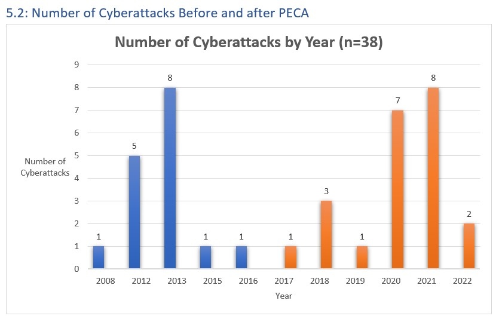
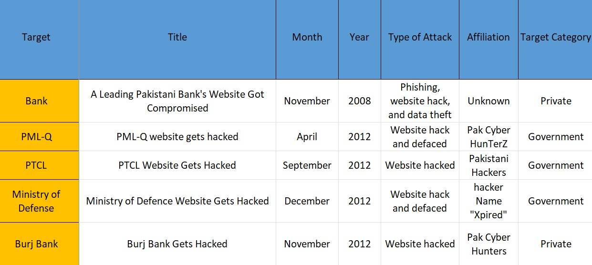

Working Papers
1. Cybersecurity in Pakistan
The purpose of this paper is to understand the factors that impact cybersecurity and cyberattacks in Pakistan. Currently cybersecurirty in Pakistan has only been studied from a qualitative perspective. The research lacks a quantitative approach. There is no dataset on cyberattacks in Pakistan. This study will fill this gap by introducing a novel dataset on cyberattacks in Pakistan. Using a mixed methods approach of descriptive data and qualitative inquiry, this research will provide a comprehensive analysis on the state of cybersecurity in Pakistan.

2. Human Rights Violations Under Pakistan’s Electronic Crimes Act
PECA has drawn criticism for its ambiguous definitions of cybercrimes, failure to define what vital infrastructure is, and suppression of free speech. The legislation also lacks a thorough and obvious enforcement mechanism since Pakistan lacks the institutional infrastructure necessary for cybersecurity. The law was met with strong opposition and labeled as ‘draconian’ because of the potential misuse of the powers granted by the law. The critcism came from human rights activists, opposition leaders, civil society, and the Information Technology sector.
Word Cloud for PECA:
3. Novel dataset on "Cyberattacks in Pakistan."
Currently there is no dataset on cybersecurity attacks in Pakistan. This research creates the first dataset on this subject. This novel dataset uses secondhand data collected from newspaper articles, journals, and government reports. The timeline is 2008-2022. The dataset has a sample size of 38.
Preview:
